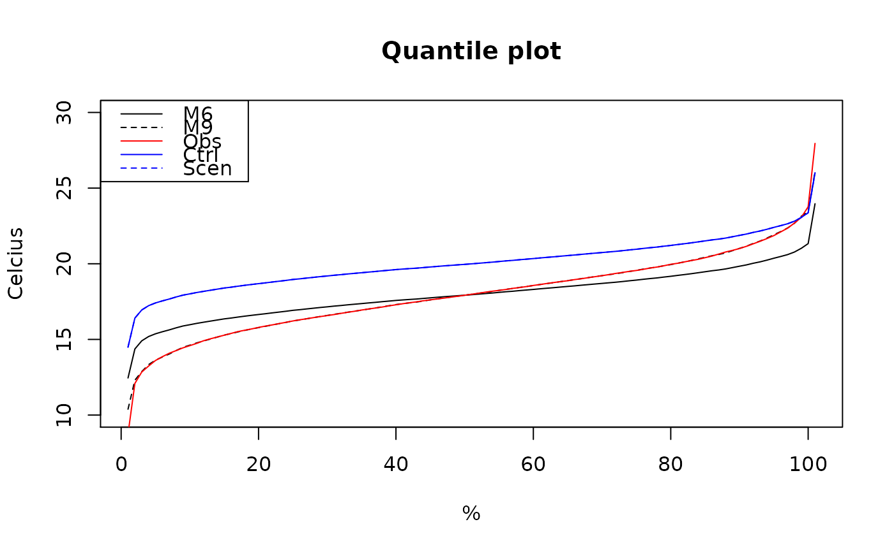

R/biasco.R
biasco.Rdbiasco returns bias corrected data as an object of type BiascoTimeSeries.
Several methods of different complexity are available in the package (see details).
biasco(obs.in, ctrl.in, scen.in, type = "abs", method = "M1", ...)
| obs.in | A vector containing the reference data. |
|---|---|
| ctrl.in | A vector of simulated data used to calibrate the method |
| scen.in | A vector of data for the scenario period simulation |
| type | String defining the type of adjustment. Currently
|
| method | Method to be used to bias adjust |
| ... | Additional parameters used to handle the behavior of specific bias correction methods. |
An object of type BiascoTimeSeries,
which contains the adjusted data and parameter values related to a particular method.
The following univariate methods have currently been implemented in this package:
M1: Simple delta change scaling of time mean
M2: Delta change scaling on mean and standard deviation. If type = ratio, then Engen-Skaugen algorithm is used.
M3: Delta change scaling on mean, standard deviation and skewness. If type = ratio, M3 corresponds to delta change scaling of mean and standard deviation using.
M4: Non-parametric quantile mapping applied in the delta change mode
M5: Parametric quantile mapping applied in the delta change mode
M6: As M1 but applied in the bias correction mode
M7: As M2 but applied in the bias correction mode
M8: As M3 but applied in the bias correction mode
M9: As M4 but applied in the bias correction mode
M10: As M5 but applied in the bias correction mode
biasco2d for two-dimensional bias correction of temperature and precipitation
#> #>#> #> #>#> Warning: data set ‘model_data’ not found#Create objects which contain the bias corrected data bc6 <- biasco(varsO[,"temp"], varsC[,"temp"], varsC[,"temp"], type = "abs", method = "M6") bc9 <- biasco(varsO[,"temp"], varsC[,"temp"], varsC[,"temp"], type = "abs", method = "M9") #Visualise the results plot(quantile(dat(adj(bc6)), seq(0,1,0.01)), type = "l", main="Quantile plot", xlab = "%", ylab = "Celcius", ylim = c(10,30))legend("topleft", c("M6","M9","Obs","Ctrl","Scen"), col = c("black","black","red","blue","blue"), lty = c(1,2,1,1,2))